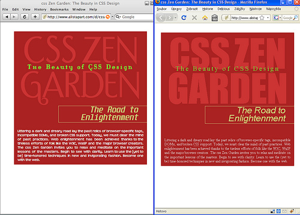

23. říjen 2008, 23:20 Kategorie: Webdesign
Již brzy vydaný Firefox 3.1 bude s největší pravděpodobností podporovat CSS vlastnost @font-face a tím mi právě začaly Vánoce.
Vkládaná (embed) písma totiž nejsou další z těch hezkých nových vlastností prohlížečů, kterých si sotva všimnete a za dva roky zjistíte, že je docela milé je využívat. Nikoliv. Využívání fontů je součástí podstaty webdesignu a @font-face měly všechny ty zatracené prohlížeče podporovat už pěknou řadu let.

Srovnání stránky s vkládanými fonty v Safari 3.2.1 a Firefoxu 3 na Windows. Hádejte, který podporuje @font-face :)
Když jsem v jedné učebně Ostravské univerzity před 11 lety vytvořil svoji první HTML stránku, měl jsem obrovskou radost, že díky Netscape Composeru můžu na některé části stránky zvolit font Verdana a na jiné Times New Roman. Radost mi zkazilo zjištění, že Verdana na počítači mého prvního klienta jaksi nefunguje. Tak začal můj boj s nesystémovými fonty.
Potřeba vkládat vlastní fonty je přitom naprosto jasná, přirozená a nesouvisí s webem. Lidé se chtějí vizuálně odlišovat, webdesignéři chtějí dodržovat vizuální styl organizací pro něž pracují a uživatelé by jistě uvítali fonty, které se dobře čtou bez ohledu na operační systém jaký využívají.
Některé z důvodů proč se tak dosud nestalo se myslím překrývají s množinou „obecných námitek proti pokroku internetových technologií”. Pojďme si je zkusit z legrace vyjmenovat:
Zbraně jako náhrada nadpisu obrázkem, pak trošku přístupnější náhrada nadpisu obrázkem na pozadí (FIR), generováním nadpisů na serveru (naposledy FLIR) byly předvojem zatím nejlepšího řešení, kterým je sIFR.
Všechny tyto „hacky” a nervydrásající práce s nejlepším z nich jsou však pouze výrazem zoufalého boje webdesignérů s typografií na webu.
Sám Mike Davidson, jeden z autorů sIFRu, říká: „Ačkoliv dnes sIFR umožňuje lepší práci s písmem, určitě není řešením pro příštích dvacet let”. Tím by však mohlo být @font-face.
Díky CSS vlastnosti @font-face prostě nadefinujete cestu k nějakému souboru, který obsahuje vybraný font, a na stránce jej pak použijete. Díky hodným prohlížečům se pak font zobrazí všem lidem na světě stejně.
V CSS pak definice vypadá asi takto:
@font-face { font-family: MujFont; src: url('MujFont-Roman.otf'); } h1 { font-family: MujFont, sans-serif; }
Současná podpora @font-face v prohlížečích je ke dnešku velmi různorodá:
Standard webových fontů bude další velkou prohlížečovou bitvou. Připravme obvazy.
Netěšme se proto předčasně — uplyne pár měsíců, než @font-face budeme moci s obezličkami různých hacků začít používat napříč prohlížeči a bude trvat roky než se obejdeme i bez nich. Pod svůj vývojářský vánoční stromeček si k ukrácení čekání budu přát alespoň bezchybnou verzi sIFRu.
Pokud vás zajímá další informace na téma fonty a webdesign, podívejte se do patřičného štítku v mých Delicious.
Ulož do delicious, linkuj.cz, jagg.cz, vybrali.sme.sk Díky!
Diskuze
[ RSS této diskuze ]
VfB, 24. 10. 08, 07:06, #
tomas, 24. 10. 08, 12:35, #
Martin Michálek, 24. 10. 08, 13:47, #
Yuhů, 25. 10. 08, 22:14, #
msgre, 27. 10. 08, 09:49, #
Martin Michálek, 28. 10. 08, 15:14, #
Komentáře jsou uzavřeny